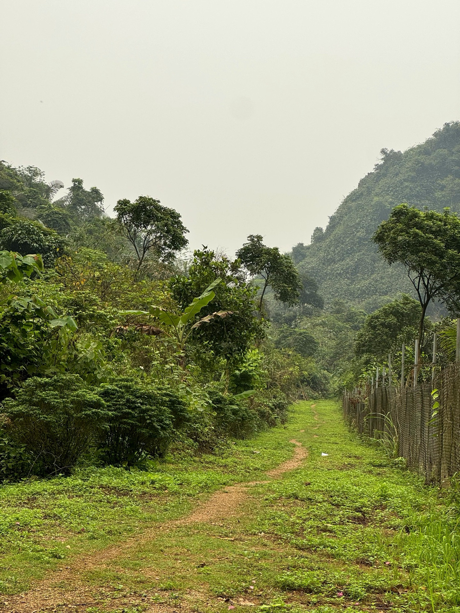
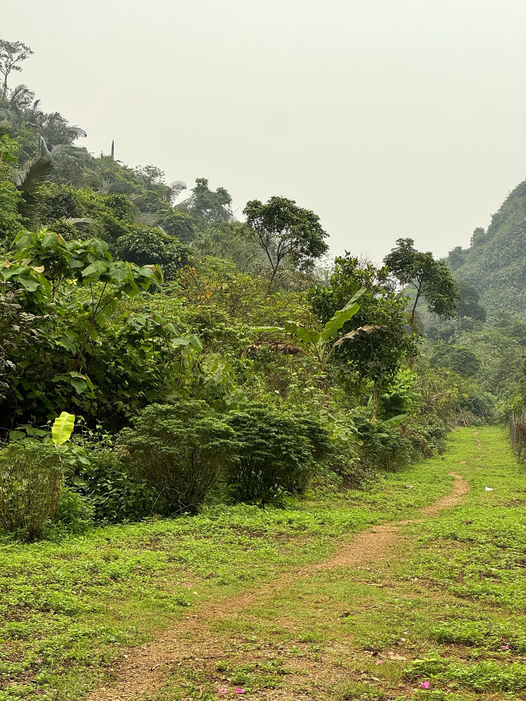
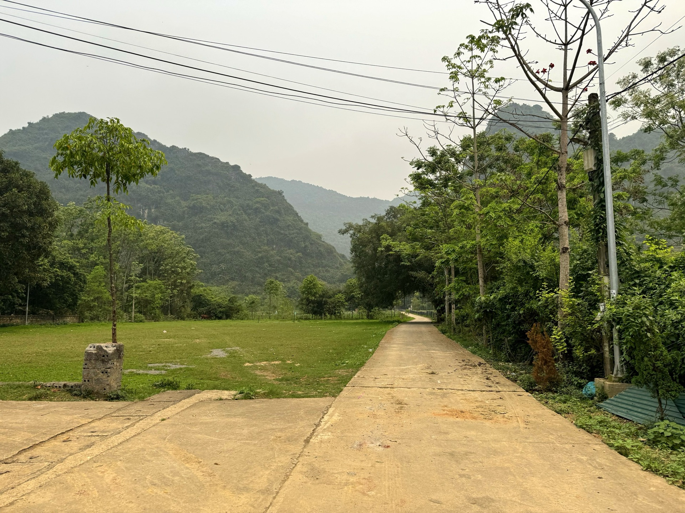

Loại hìnhTypeType
Cảnh quan thiên nhiênNatural landscapesPaysages naturels

Động Hương Tích (chùa Hương) là một trong những danh thắng nổi tiếng nhất của Hà Nội, thu hút hàng triệu du khách mỗi năm. Tuy nhiên, hành trình trekking khám phá động theo lối mòn của người địa phương – tách biệt khỏi dòng khách đông đúc – mang đến một trải nghiệm hoàn toàn khác biệt.
Anh Thưởng, người dân thôn Thanh Hà gắn bó với vùng núi Hương Tích từ nhỏ, là người dẫn đường địa phương am hiểu các chặng leo, cảnh quan ít người biết và những câu chuyện dân gian gắn với từng địa điểm. Đi cùng anh, du khách không chỉ leo núi mà còn hiểu hơn về mối quan hệ giữa cộng đồng người Mường và không gian núi rừng xung quanh họ.
Động Hương Tích (Chùa Hương) is one of Hanoi's most famous attractions, drawing millions of visitors annually. However, trekking to explore the cave via local trails – away from the bustling crowds – offers a completely different and unique experience.
Mr. Thuong, a Thanh Ha villager connected to the Huong Tich mountain region since childhood, is a local guide deeply knowledgeable about climbing routes, little-known landscapes, and folk tales associated with each location. With him, visitors not only climb mountains but also gain a deeper understanding of the relationship between the Muong community and their surrounding mountainous forest environment.
Động Hương Tích (Chùa Hương) est l'une des attractions les plus célèbres de Hanoi, attirant des millions de visiteurs chaque année. Cependant, la randonnée pour explorer la grotte par les sentiers locaux – à l'écart des foules – offre une expérience totalement différente et unique.
M. Thuong, un villageois de Thanh Ha lié à la région montagneuse de Huong Tich depuis l'enfance, est un guide local profondément connaisseur des itinéraires d'escalade, des paysages méconnus et des contes populaires associés à chaque lieu. Avec lui, les visiteurs ne se contentent pas de gravir les montagnes, ils acquièrent également une compréhension plus profonde de la relation entre la communauté Muong et leur environnement forestier montagneux.


Dịch vụ dẫn đường trekking của anh Thưởng hướng tới được tích hợp vào các gói tour kết hợp: Mường Cốc – Hương Tích 1 ngày và 2 ngày 1 đêm. Giai đoạn tiếp theo tập trung đào tạo kỹ năng thuyết minh song ngữ cho anh Thưởng, xây dựng hành trình có điểm dừng chuẩn và kết nối với chuỗi dịch vụ nghỉ dưỡng – ẩm thực của cộng đồng Mường Cốc. Điểm đến Du lịch cộng đồng Mường Cốc, Xã Mỹ Đức – Thành phố Hà NộiAnh Thuong's trekking guide service aims to be integrated into combined tour packages: Muong Coc – Huong Tich 1-day and 2-day/1-night tours. The next phase focuses on training Anh Thuong in bilingual interpretation skills, developing standardized itineraries with designated stops, and connecting with Muong Coc community's accommodation and culinary service chain. Muong Coc Community-Based Tourism Destination, My Duc Commune – Hanoi City.Le service de guide de trekking d'Anh Thưởng vise à être intégré dans des forfaits combinés : circuits Mường Cốc – Hương Tích d'une journée et de 2 jours/1 nuit. La prochaine phase se concentrera sur la formation d'Anh Thưởng aux compétences d'interprétation bilingue, le développement d'itinéraires standardisés avec des arrêts désignés et la connexion avec la chaîne de services d'hébergement et culinaires de la communauté de Mường Cốc. Destination de Tourisme Communautaire Mường Cốc, Commune de Mỹ Đức – Ville de Hà Nội.